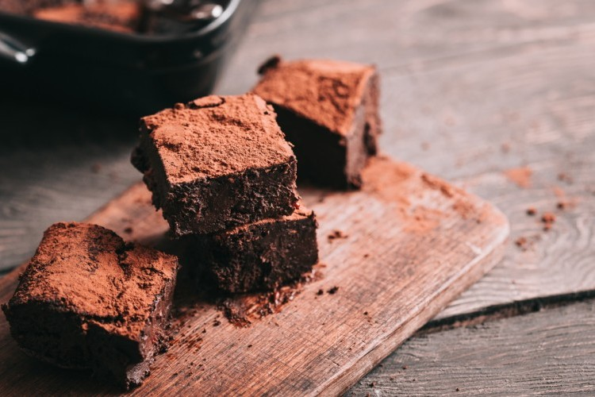

كيكة الشوكولاته
كيكة الشوكلاته من أشهر أنواع الحلويات حول العالم، وهي شهية للغاية يحبها الكثير.
مقادير كيكة الشوكلاته
| الكمية |
المكون |
| 2 |
كوب دقيق |
| 1 |
كوب سكر |
| 1 |
كوب حليب |
| 1/2 |
كوب زيت |
| 5 |
ملعة كاكاو |
| 3 |
حبات بيض |
طريقة تحضير كيكة الشوكلاته
- احضري وعاء وضعي الدقيق، والحليب والسكر وقلبيه جيداً
- اخلطي بقية المكونات بالخلاط الكهربائي
- اسكبي الخليط السائل على الخليط الجاف، وخلطيه بالمضرب اليدوي
- ادخلي الصينيه الفرن لمدة 45 دقيقة